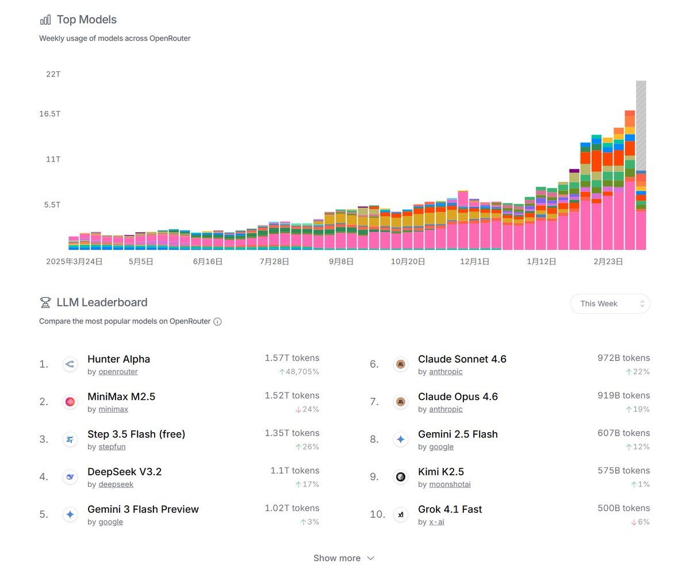
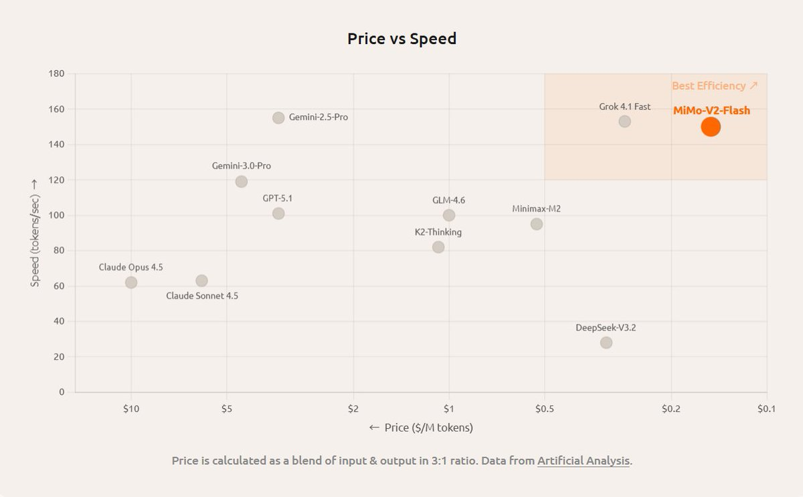

hsn今天吃什么
@hsn8086k
很不错吗, 明明这个模型测试时有严重 bug.
还以为 ds 变这么拉了, 原来并不是 ds.


雪糕战神🍦
@Xuegaogx
中国大模型 Hunter Alpha，连续两周登顶全球日调用量榜一，科技圈都在猜背后是谁
今天小米官宣 MiMo-V2-Pro，Hunter Alpha 就是它
总参数突破 1T，激活参数 42B，原生支持 100 万上下文，在全球排行榜 Artificial Analysis 上排第八，国内第二，API 定价只有同行的 1/5
去年 12 月那个 Flash 版才 https://t.co/VO5ZWzbG98